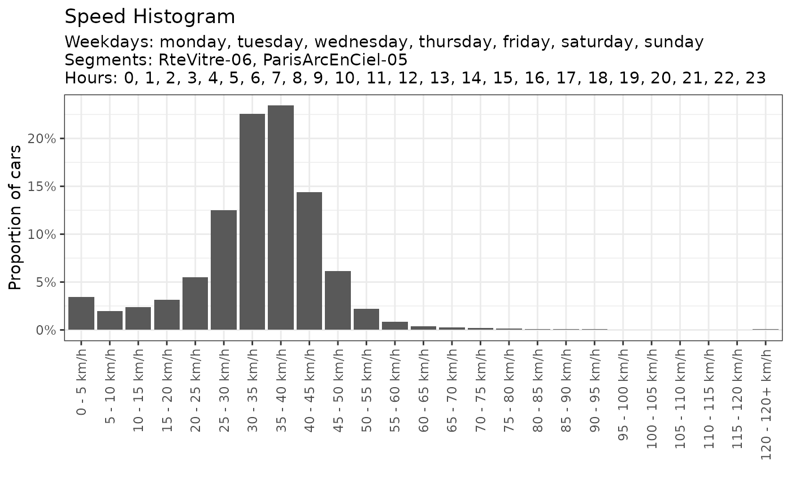

Histogram of car speed over a period, for a segment or a subset of segment.
Source:R/plot_car_speed.R
gg_car_speed_histogram.RdHistogram of car speed over a period, for a segment or a subset of segment.
Usage
gg_car_speed_histogram(
enriched_data,
date_range = NULL,
segments = NULL,
weekday = NULL,
hours = NULL,
aggregated_by = NULL
)Arguments
- enriched_data
enriched data.frame containing all the data for all your sensors
- date_range
Date vector. Example: c('2021-01-01','2022-01-01'). Full period if NULL (default).
- segments
Character vector. Selected road segment, all if NULL (default).
- weekday
Character vector. Weekday choosen. Default to the all week.
- hours
Integer vector. Hours choosen, default to the all day.
- aggregated_by
Character. Enables comparison with other segments or weekdays. Options are : 'segment_name', 'weekday', NULL (no comparison, default).
Examples
library(dplyr)
#>
#> Attaching package: ‘dplyr’
#> The following objects are masked from ‘package:stats’:
#>
#> filter, lag
#> The following objects are masked from ‘package:base’:
#>
#> intersect, setdiff, setequal, union
subset_traffic <- traffic %>% filter(day < '2022-02-01', hour > 9)
gg_car_speed_histogram(subset_traffic)

gg_car_speed_histogram(subset_traffic,
aggregated_by = 'segment_name')
gg_car_speed_histogram(subset_traffic,
weekday = c('monday','sunday'),
segments = 'RteVitre-06',
hours = 17:20,
aggregated_by = "weekday")